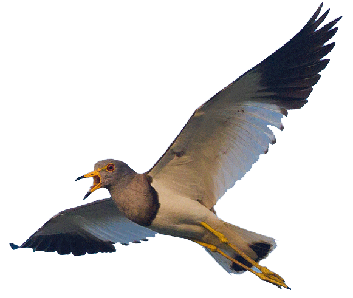
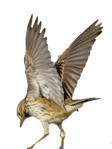

0M
100M
200M
300M
400M
500M
600M
700M
800M
900M
1000M
白鹭
牛背鹭
绿翅鸭
鹊鹞
红脚隼
燕隼
红隼
普通燕鸻
环颈雉
鹌鹑
骨顶鸡

灰头麦鸡
凤头麦鸡
金眶鸻
扇尾沙锥
丘鹬
白腰草鹬
环颈鸻
山斑鸠
大杜鹃
家鸽
矶鹬
云雀
金腰燕
家燕
短耳鸮

纵纹腹小鸮
戴胜

田鹨

红尾伯劳

八哥
小鹀
麻雀
三道眉草鹀
灰头鹀
黄胸鹀
苇鹀
| 中文名 | 英文名 | 危害等级 | 飞行高度 | 备注 | 活跃期 |
| 苇鹀 | Emberiza pallasi | 3 | 967 | ||
| 灰头鹀 | Emberiza spodocephala | 3 | 928 | ||
| 黄胸鹀 | Emberiza aureola | 3 | 901 | ||
| 三道眉草鹀 | Emberiza cioides | 3 | 880 | ||
| 小鹀 | Emberiza pusilla | 3 | 865 | ||
| 麻雀 | Passer montanus | 4 | 808 | ||
| 八哥 | Acridotheres cristatellus | 3 | 790 | ||
| 红尾伯劳 | Lanius cristatus | 3 | 749 | ||
| 戴胜 | Upupa epops | 3 | 739 | ||
| 田鹨 | Anthus richardi | 5 | 719 |
灰头鹀
Emberiza spodocephala
飞行高度：900 ~ 1000M
危害等级：
形态特征
全长约140mm。雄鸟的头、颈背及喉灰，眼先及颏黑；上体余部浓栗色而具明显的黑色纵纹；雌鸟及冬季雄鸟头橄榄色，过眼纹及耳覆羽下的月牙形斑纹黄色。
生态特征
栖于平原以至高山（海拔3000m）的灌木丛间，也见于公园的矮林、杨柳树上，在篱笆、电线杆或电线上都有踪迹。杂食性，以植物为主，多为杂草种子，也啄食昆虫。
灭杀方法
在场内外排水沟及有苇草的地段，每1.5~2m设低网捕捉，在冬季毒饵诱杀，猎杀驱赶，控制集群等。
|
2016年4月
|
||||||
|
一
|
二
|
三
|
四
|
五
|
六
|
日
|
|
28
二十
|
29
廿一
|
30
廿二
|
31
廿三
|
1
愚人节
|
2
廿五
|
3
廿六
|
|
4
清明
|
5
廿八
|
6
廿九
|
7
三月
|
8
初二
|
9
初三
|
10
初四
|
|
11
初五
|
12
初六
|
13
初七
|
14
初八
|
15
初九
|
16
初十
|
17
十一
|
|
18
十二
|
19
谷雨
|
20
十四
|
21
十五
|
22
十六
|
23
十七
|
24
十八
|
|
25
十九
|
26
二十
|
27
廿一
|
28
廿二
|
29
廿三
|
30
廿四
|
1
劳动节
|
飞行分布
查询
鸟情日历
V1.02
帮助
您可以通过鼠标滚轮或键盘上下方向键控制高度，或者直接点击右侧刻度对应的高度区域来切换。